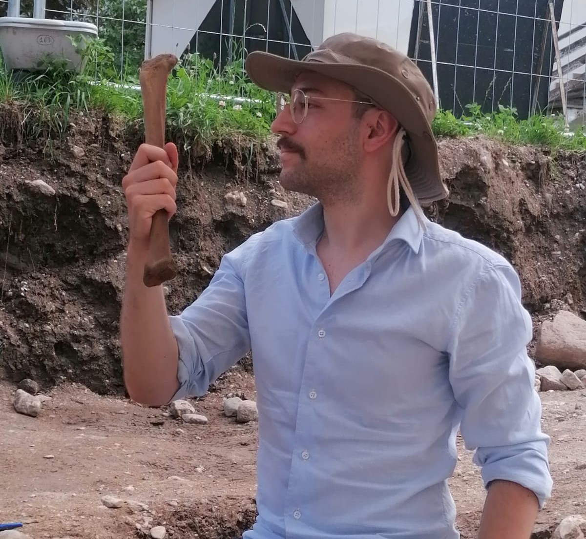

Maria Teresa Vizzari
Postdoc
I studied prehistoric archaeology in Ferrara and received my PhD in Evolutionary Biology and Ecology from the University of Ferrara in 2021. My research focuses mainly on the study of the genetic variability of Homo sapiens in its geographical and temporal dimensions, testing demographic hypotheses that combine genomic and archaeological data. I am also interested in the development of new frameworks that exploit both modern and ancient genomes, in order to better understand migration, kinship, and processes of cultural change during the evolution of our species.
Patrícia Santos
Postdoc
I studied Human Biology at the Faculty of Sciences of the University of Lisbon and received my PhD in Evolutionary Biology and Ecology from the University of Ferrara in 2020. My research interests focus on how genomic data are influenced by the demographic history of populations and the methods used to improve our understanding of the human evolutionary history. My current research activity is focused on the study of the Neolithic transition in Europe through the analysis of genomic and metagenomic data extracted from ancient human finds.

Rajiv Boscolo Agostini
PhD student
I received my master degree in Biomolecular and Evolutionary Sciences from the Univeristy of Ferrara in 2019. My research focuses mainly on demographic modeling and reconstruction of evolutionary dynamics. I am studying past human populations in Italy analyzing ancient whole-genome sequences using different approaches. I am also collaborating on projects involving different fields, such as employing bacterial markers for tracing human migrations or the reconstruction of demographic dynamics in invasive species.
Debora Ferraresi
PhD student - co-tutor prof. Guido Barbujani
Graduated in 2021 in Biomolecular and Cellular Sciences at the University of Ferrara, I’m now pursuing my PhD in Life Sciences and Biotechnology. My research focuses on exploring the genomics of the ancient population of Pompeii, analyzing whole-genome sequences of the victims of the 79 CE eruption using different approaches. I am also involved in projects aimed at reconstructing the evolutionary history of loci of pharmacogenetic interest from both diachronic and synchronic perspectives, using ancient and modern data.

Federico De Pizzol
Research fellow
I graduated in Evolutionary Biology at the University of Padua in 2022. My main interests are European medieval history and demography and skeletal anthropology. I am currently working on reconstructing the evolutionary dynamics of past human populations in Italy through the analysis of ancient genomes.